Four bold reinventions rendered from the same real GitHub data. The live widget stays put; pick directions worth taking further.
The widget in the README today.

A live shell session — monospace scrollback, block-glyph sparklines, blinking prompt. Leans into the CLI identity.

A knowledge graph: a central node wired out to the upstream repos I've landed in (size = PRs merged) and my own projects (size = commits).

Swiss/magazine treatment — one enormous hero stat, a hairline grid, a numbered index of work. Boldness through typographic scale.

An instrument panel — a 270° merge-rate gauge and a 12-spoke radial clock of merged PRs per month. Everything circular.
